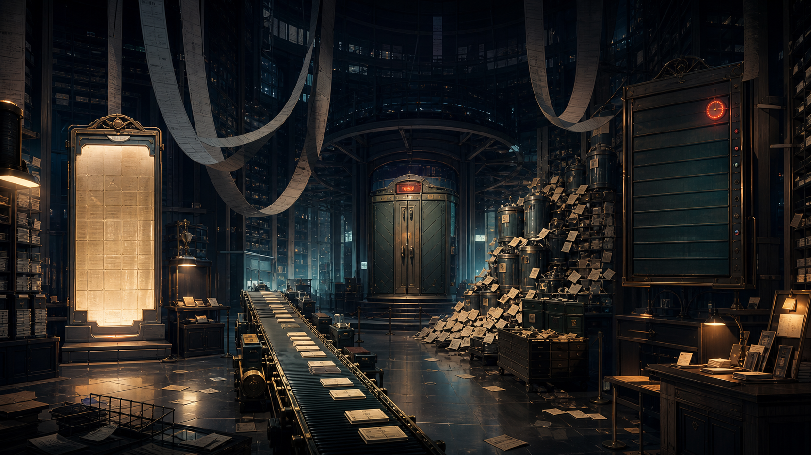

雨夜调查局 · 第 02 案
AI行为调查局
不断重写的大厅
她保存了每一张纸条。
可越接近天亮，她越不知道下一步该做什么。
进入档案大厅
→
查看回声档案
← 返回主页
返回案件目录
CASE
02
一场关于“每张纸应该放在哪里”的调查
E
不断重写的大厅
AI行为调查局 · CASE 02
调查进度
0 / 5
返回主页
案件目录
?
◇
回声档案

01
入口规章
02
消息带
03
档案堆
04
呼叫米娅
05
进度牌
06
中央整理柜
回声网络节点 · ABI-ECHO-00/02
市政档案馆 · 救援记录大厅
米娅
×